การใช้งาน Zephyr RTOS สำหรับไมโครคอนโทรลเลอร์ Espressif ESP32 (ตอนที่ 1)#
Keywords: Zephyr RTOS, Zephyr IDE, Extension Pack for VS Code IDE, ESP32
▷ บอร์ด ESP32 SoC#
Zephyr RTOS เป็นระบบปฏิบัติการเวลาจริงแบบ Open Source ที่รองรับการใช้งานชิปและบอร์ดไมโครคอนโทรลเลอร์หลายตัวเลือก รวมถึง ESP32 / ESP32-S2 / ESP32-S3 SoC ซึ่งมีซีพียูที่ทำงานตามสถาปัตยกรรม Xtensa 32-bit CPU Core (LX6 / LX7) มีทั้งแบบ Single-Core และ Dual-Core และชิป ESP32-C3 / ESP32-C6 (RISC-V)
ชิป ESP32 ได้รับความนิยมอย่างมากในช่วงหลายปีที่ผ่านมา มีบอร์ดไมโครคอนโทรลเลอร์ให้เลือกใช้จำนวนมาก อีกทั้งยังสามารถเขียนโปรแกรมด้วย Arduino และ ESP-IDF ที่ทำงานด้วยระบบปฏิบัติการเวลาจริง FreeRTOS
บทความนี้จะนำเสนอตัวอย่างการเขียนโค้ดและใช้งาน Zephyr RTOS for ESP32 ที่เป็นอีกตัวเลือกหนึ่ง แต่ก็มีความซับซ้อนกว่า FreeRTOS
แนะนำให้ติดตั้งและใช้งานซอฟต์แวร์ VS Code IDE + Zephyr IDE Extension Pack ให้พร้อมใช้งานก่อน โดยจะต้องสร้าง Zephyr Workspace และติดตั้งซอฟต์แวร์ที่เกี่ยวข้อง (ในบทความนี้ได้ทดลองใช้ Zephyr v4.0.0)
▷ การเริ่มต้นสร้างโปรเจกต์ใหม่ (New Project Creation)#
เริ่มต้นให้สร้างโปรเจกต์ใหม่ใน Zephyr Workspace
โดยเลือกวิธีสร้างจากโปรเจกต์ตัวอย่าง เช่น led_blinky
ในตัวอย่างนี้ได้ตั้งชื่อ led_blink_esp32 สำหรับโปรเจกต์ใหม่
กดปุ่ม Ctrl+Shift+P แล้วเลือก "Zephyr IDE: Create Project From Template"
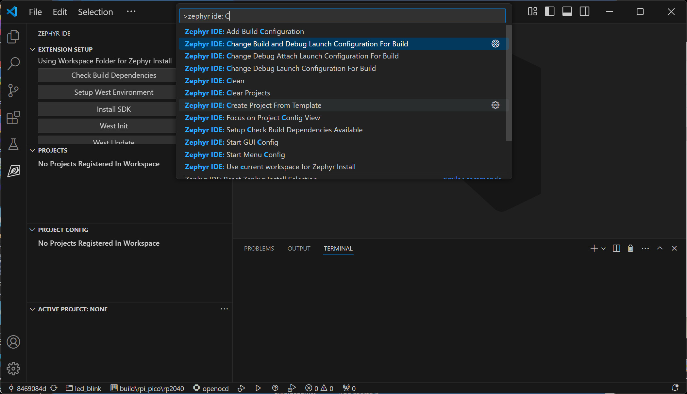
รูป: การทำขั้นตอน Zephyr IDE: Create Project From Template
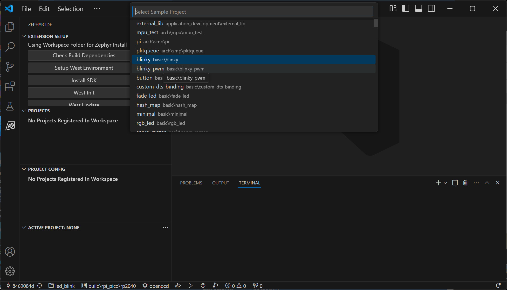
รูป: เลือกโปรเจกต์ตัวอย่างจาก basic\led_blinky ของ Zephyr
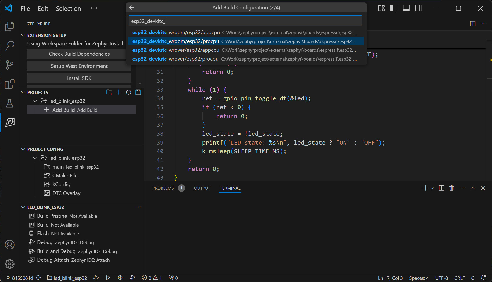
รูป: ขั้นตอนการเพิ่ม Build สำหรับบอร์ด ESP32
ในตัวเลือก PROJECTS ที่มีการสร้างโปรเจกต์ใหม่แล้ว
ซึ่งในตัวอย่างคือ led_blink_esp32 ให้กดปุ่ม "Add Build"
เพื่อสร้างไดเรกทอรีสำหรับการคอมไพล์โค้ดในโปรเจกต์
และในขั้นตอนนี้จะต้องมีการเลือกบอร์ดไมโครคอนโทรลเลอร์
ในกรณีตัวอย่างได้ให้เลือกบอร์ด esp32-devkitc-wroom/esp32/ สำหรับ ESP32 ซึ่งมีสองตัวเลือก
(โมเดลของฮาร์ดแวร์) โดยจำแนกตามแกนของซีพียูภายในชิป ESP32 ที่จะใช้สำหรับการรันโค้ดของ Zephyr
esp32/procpuหมายถึง CPU Core 0esp32/appcpuหมายถึง CPU Core 1
จากนั้นให้เลือกประเภทของ Build เช่น Debug
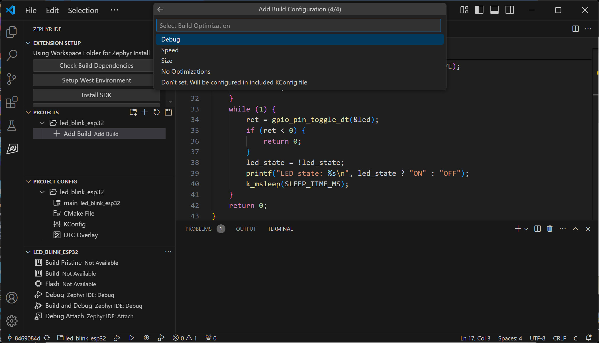
รูป: การเลือกประเภทของ Build เช่น Debug หรือ Release
ให้แก้ไขหรือสร้างไฟล์ในโปรเจกต์ เช่น
main.cสำหรับเขียนโค้ดตามตัวอย่างproj.confสำหรับการตั้งค่าในการคอมไพล์โค้ดในโปรเจกต์ เช่นCONFIG_GPIO=yและอื่น ๆapp.overlayเป็นไฟล์สำหรับ Device Tree Overlay เช่น การกำหนดขา GPIO เพื่อใช้งานให้ตรงกับบอร์ดไมโครคอนโทรลเลอร์ที่จะใช้งาน
โค้ดตัวอย่างที่ได้จาก basic\led_blinky มีดังนี้
#include <stdio.h>
#include <zephyr/drivers/gpio.h>
#include <zephyr/kernel.h>
#define SLEEP_TIME_MS 1000
#define LED0_NODE DT_ALIAS(led0)
static const struct gpio_dt_spec led = GPIO_DT_SPEC_GET(LED0_NODE, gpios);
int main(void) {
int ret;
bool led_state = true;
if (!gpio_is_ready_dt(&led)) {
return 0;
}
ret = gpio_pin_configure_dt(&led, GPIO_OUTPUT_ACTIVE);
if (ret < 0) {
return 0;
}
while (1) {
ret = gpio_pin_toggle_dt(&led);
if (ret < 0) {
return 0;
}
led_state = !led_state;
printf("LED state: %s\n", led_state ? "ON" : "OFF");
k_msleep(SLEEP_TIME_MS);
}
return 0;
}
ก่อนที่จะทำขั้นตอน Build เพื่อคอมไพล์โค้ดสำหรับ ESP32
จะต้องตั้งค่าใช้งานสำหรับโปรเจกต์ในไฟล์ prof.conf และ app.overlay ตามตัวอย่างดังนี้
File: proj.conf
CONFIG_GPIO=y
CONFIG_ESP32_USE_UNSUPPORTED_REVISION=y
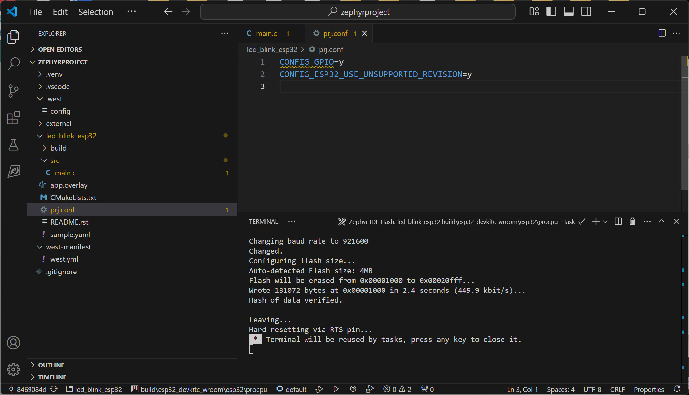
รูป: ตัวอย่างไฟล์ proj.conf
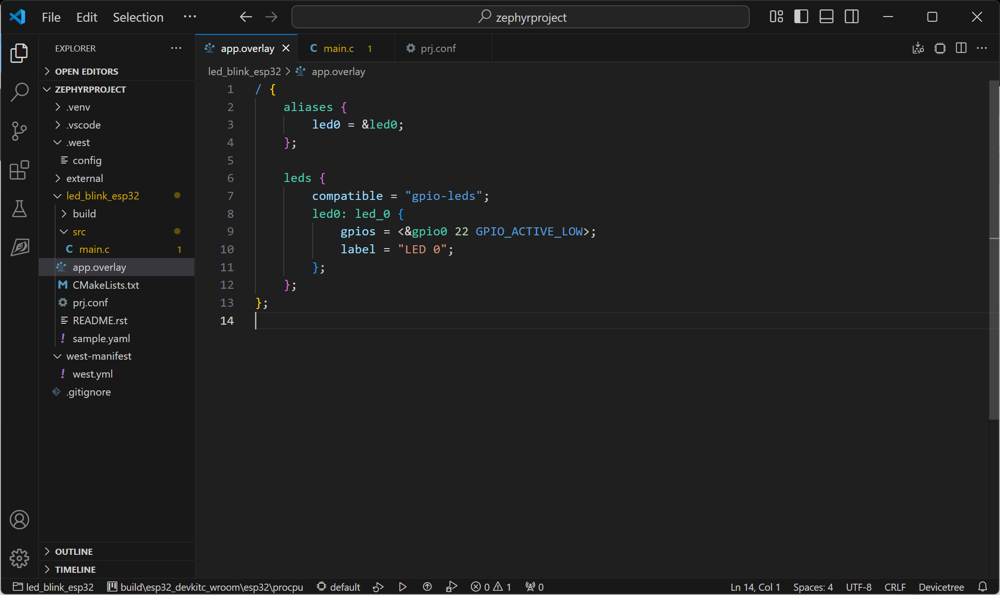
รูป: ตัวอย่างไฟล์ app.overlay
Zephyr มีวิธีการจัดการและใช้งานวงจรต่าง ๆ ของชิป SoC โดยกำหนดรูปแบบของโครงสร้างข้อมูล เป็นแบบ "แผนภูมิต้นไม้" เรียกว่า Device Tree ซึ่งประกอบด้วยโหนด (Nodes) ต่าง ๆ ในแต่ละระดับ และบันทึกอยู่ในไฟล์ที่เรียกว่า Device Tree Source (.dts)
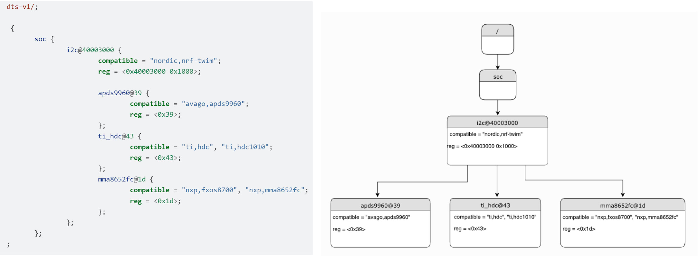
รูป: ตัวอย่างโครงสร้างของ Device Tree และไฟล์ DTS
จากโครงสร้างตัวอย่าง จะเห็นได้ว่า โหนดแรกเริ่ม เรียกว่า Root Node และใช้สัญลักษณ์เป็น /
และมีโหนดในระดับชั้นถัดไป (เรียกว่า Child Node) ที่มีชื่อ (Node Label)
เรียกว่า soc ซึ่งมีโหนดย่อยลงไป เช่น i2c (เป็นหนึ่งตัวอย่างของวงจรภายในชิป) และมีการกำหนดคุณสมบัติไว้ด้วย
(เช่น สำหรับชิป nRF) แต่ถ้าเป็นโหนด soc สำหรับชิป ESP32 ก็จะมีรายละเอียดที่แตกต่างไป
ดูตัวอย่างไฟล์ DTS สำหรับบอร์ด esp32_devkitc_wroom
- esp32_devkitc_wroom/esp32_devkitc_wroom_procpu.dts
- esp32_devkitc_wroom/esp32_devkitc_wroom_appcpu.dts
การคอมไพล์โค้ดของโปรเจกต์ จะต้องมีไฟล์ zephyr.dts สำหรับบอร์ดไมโครคอนโทรลเลอร์ที่ได้เลือกใช้งาน
และผู้ใช้สามารถตรวจสอบรายละเอียดได้จากไฟล์ดังกล่าว ในรูปถัดไปเป็นตัวอย่างไฟล์สำหรับบอร์ด ESP32
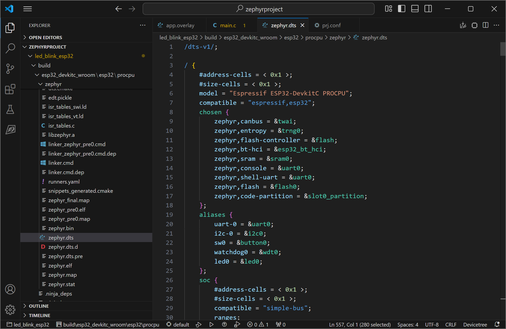
รูป: ตัวอย่างไฟล์ zephyr.dts ที่ใช้สำหรับขั้นตอน Build
ไฟล์ .overlay เป็นไฟล์ประเภท Device Tree Overlay
และใช้กำหนดค่าใหม่ (หรือเพิ่มเติม) โดยผู้ใช้ สำหรับ Device Tree เช่น
ส่วนที่เกี่ยวข้องกับการใช้งานวงจรประเภทต่าง ๆ ภายในชิป
File: app.overlay
/ {
aliases {
led0 = &led0;
};
leds {
compatible = "gpio-leds";
led0: led_0 {
gpios = <&gpio0 22 GPIO_ACTIVE_LOW>;
label = "LED 0";
};
};
};
เนื่องจากในบทความนี้ได้เลือกใช้บอร์ด WeMos Lolin32 Lite
จึงต้องเลือกขา GPIO 22 สำหรับ LED (active-low)
อ้างอิงชื่อโหนดเป็น led0 และเป็นส่วนหนึ่งของโหนดใน Device Tree ที่มีชื่อว่า leds
(เรียกว่า LED Groups) และใช้ได้กับ Zephyr GPIO LEDs Driver ที่มีชื่อว่า gpio-leds
การทำขั้นตอน Build สามารถทำได้อีกวิธี โดยการทำคำสั่ง west ดังนี้
west build -b esp32_devkitc_wroom/esp32/procpu led_blink_esp32
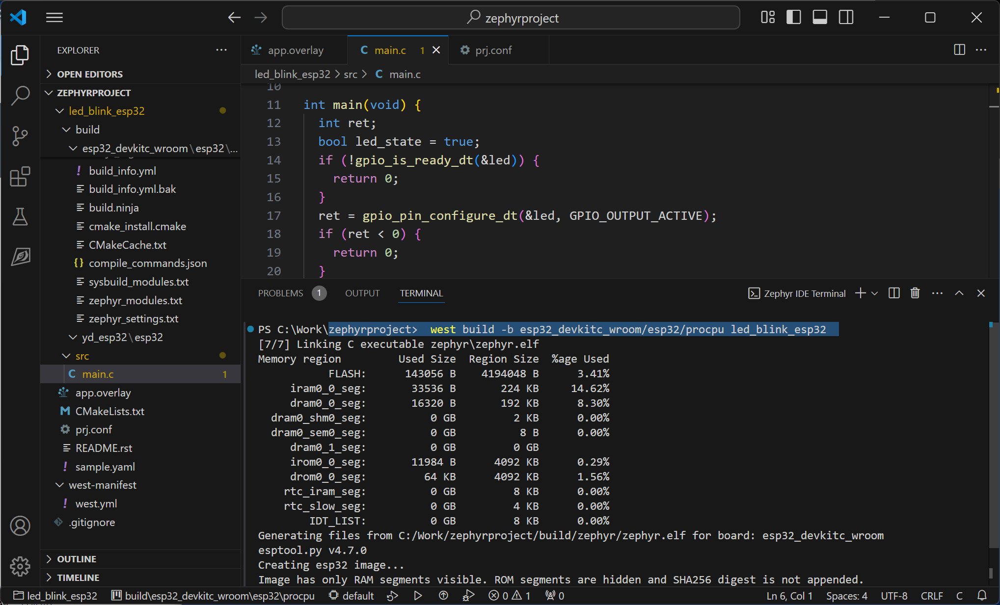
รูป: ตัวอย่างการคำสั่ง west build
หากทำขั้นตอน Build เพื่อคอมไพล์โค้ดได้สำเร็จแล้ว ถัดไปให้อัปโหลดไฟล์เฟิร์มแวร์ไปยังบอร์ด ESP32 ที่เชื่อมต่อกับคอมพิวเตอร์ของผู้ใช้กับพอร์ต USB
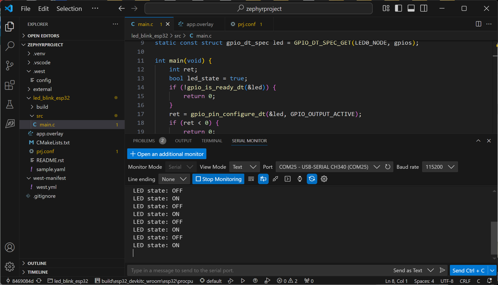
รูป: ขั้นตอนการ Build และอัปโหลดไฟล์เฟิร์มแวร์ไปยังบอร์ด
(ให้เพิ่ม Runner เป็น default สำหรับ Build)
▷ การสร้างเธรดสำหรับ LED Blinking#
โค้ดตัวอย่างถัดไปสาธิตการสร้าง "เธรด" (Thread) เพื่อให้ทำหน้าที่สลับสถานะลอจิกของ LED แทนที่จะใช้ "เธรดหลัก" (Main Thread) สำหรับงานดังกล่าว
#include <stdio.h>
#include <zephyr/kernel.h>
#include <zephyr/drivers/gpio.h>
// Use the led0 alias for the onboard LED
#define LED_NODE DT_ALIAS(led0)
static const struct gpio_dt_spec led = GPIO_DT_SPEC_GET(LED_NODE, gpios);
#define SLEEP_TIME_MS (1000)
#define THREAD_STACK_SIZE (512)
#define THREAD_PRIORITY (5)
void led_blink_func(void *, void *, void *);
K_THREAD_DEFINE(led_blink_tid, THREAD_STACK_SIZE,
led_blink_func, NULL, NULL, NULL,
THREAD_PRIORITY, 0, 0);
void show_running_thread() {
struct k_thread *thread = k_current_get();
const char *thread_name = k_thread_name_get(thread);
if (thread_name != NULL) {
printk("Current thread name: %s (prio = %d)\n",
thread_name, k_thread_priority_get(thread));
} else {
printk("Current thread: @%p (prio = %d)\n",
thread, k_thread_priority_get(thread));
}
}
void main(void) {
printk("Zephyr OS on %s\n", CONFIG_SOC);
show_running_thread();
while (1) {
k_sleep(K_FOREVER); // The main thread sleeps forever
}
}
void led_blink_func(void *p1, void *p2, void *p3) {
int state = 0;
if (!gpio_is_ready_dt(&led)) {
printk("Error: gpio-leds device %s not ready\n", led.port->name);
return;
}
if (gpio_pin_configure_dt(&led, GPIO_OUTPUT_ACTIVE)!=0) {
return;
}
k_msleep(1000);
for (;;) {
show_running_thread();
(void)gpio_pin_set_dt(&led, state ^= 1);
printk("LED toggle: %d\n", state);
k_msleep(SLEEP_TIME_MS);
}
}
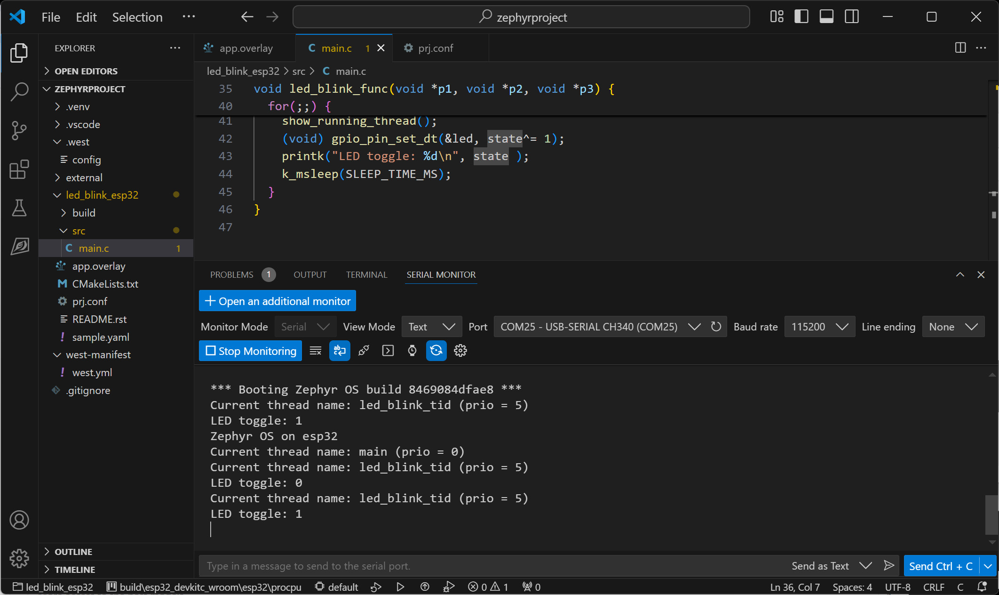
รูป: ตัวอย่างข้อความเอาต์พุตที่ได้รับผ่านทาง USB-Serial
ลองเปรียบเทียบการทำงานโดยใช้ Wokwi Simulator
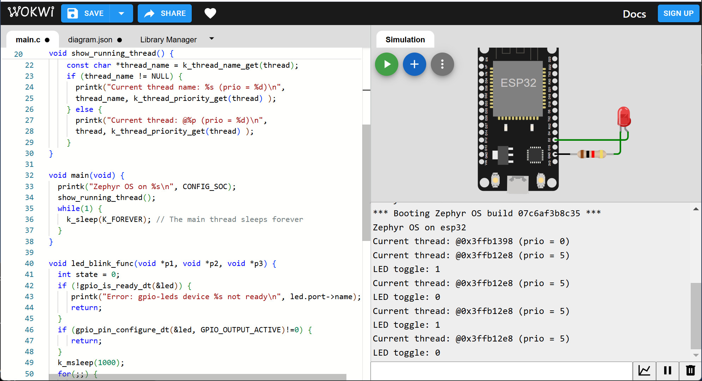
รูป: ตัวอย่างการจำลองการทำงานด้วย Wokwi Simulator
▷ การเขียนโค้ดแบบ I/O Polling Loop#
ตัวอย่างถัดไปเป็นการสาธิตการอ่านค่าจากวงจรปุ่มกดภายนอกที่ทำงานแบบ Active-Low โดยนำมาต่อเข้ากับขา GPIO-2 เพื่อใช้งานเป็น User Button และเขียนโค้ดเพื่อให้โปรแกรมตรวจสอบสถานะของอินพุตจากปุ่มกด แล้วอัปเดตสถานะของ LED
#include <stdio.h>
#include <zephyr/kernel.h>
#include <zephyr/drivers/gpio.h>
// Use the led0 alias for the onboard LED
#define LED_NODE DT_ALIAS(led0)
static const struct gpio_dt_spec led = GPIO_DT_SPEC_GET(LED_NODE, gpios);
// Use the sw1 button on GPI0-2 pin
#define SW_NODE DT_ALIAS(sw1)
static const struct gpio_dt_spec sw = GPIO_DT_SPEC_GET(SW_NODE, gpios);
#define SLEEP_TIME_MS (50)
void main(void) {
printk("Zephyr OS on %s\n", CONFIG_SOC);
if (!gpio_is_ready_dt(&led)) {
printk("Error: gpio-leds device %s not ready\n", led.port->name);
return;
}
if (gpio_pin_configure_dt(&led, GPIO_OUTPUT_ACTIVE)!=0) {
return;
}
if (!gpio_is_ready_dt(&sw)) {
printk("Error: gpio-keys device %s not ready\n", sw.port->name);
return;
}
if (gpio_pin_configure_dt(&sw, GPIO_INPUT)!=0) {
return;
}
(void)gpio_pin_set_dt(&led, 0); // Turn off the LED
int last_value = 0;
while (1) { // Polling loop
int value = gpio_pin_get_dt(&sw); // Read button input
if (value >= 0 && last_value != value) { // Update LED output
(void)gpio_pin_set_dt(&led, value);
printk("value: %d\n", value);
last_value = value;
}
k_msleep(SLEEP_TIME_MS);
}
}
สำหรับตัวอย่างนี้ จะต้องมีการใช้ไฟล์ app.overlay ดังนี้
/ {
aliases {
led0 = &led0;
sw0 = &button0;
sw1 = &button1;
};
buttons {
compatible = "gpio-keys";
button0: button_0 {
gpios = <&gpio0 0 GPIO_ACTIVE_LOW>;
label = "BOOT button";
};
button1: button_1 {
gpios = <&gpio0 2 (GPIO_ACTIVE_LOW | GPIO_PULL_UP)>;
label = "User Button";
};
};
leds {
compatible = "gpio-leds";
led0: led_0 {
gpios = <&gpio0 22 GPIO_ACTIVE_LOW>;
label = "LED 0";
};
};
};
เมื่อกดปุ่มค้างไว้ จะได้ลอจิกเป็น true (1) และปล่อยปุ่มได้ลอจิก false (0) ซึ่งจะส่งผลให้ LED
สว่างเมื่อกดปุ่มและมีค่าลอจิกเป็น 1 และดับลงเมื่อปล่อยปุ่ม และมีข้อสังเกตว่า วงจรปุ่มและวงจร LED ทำงานแบบ active-low
การใช้คำสั่งของ Zephyr GPIO driver อย่างเช่น gpio_pin_get_dt() ซึ่งมีการเรียกใช้คำสั่ง gpio_pin_get() เพื่ออ่านค่าลอจิกของขา GPIO ที่เป็นอินพุต
สามารถศึกษาได้จากเอกสารออนไลน์ Zephyr API Doc:
group__gpio__interface.html
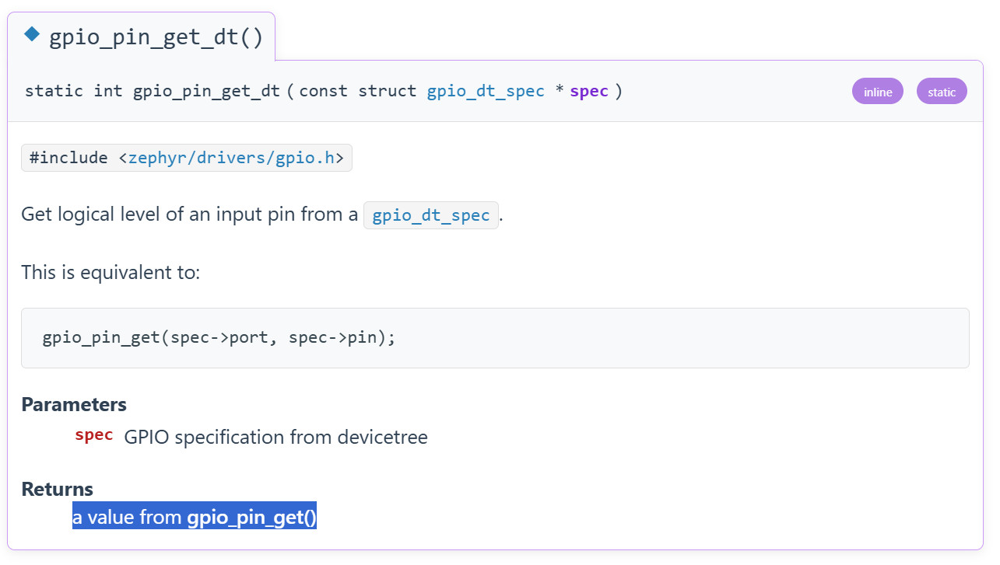
รูป: คำสั่ง gpio_pin_get_dt()
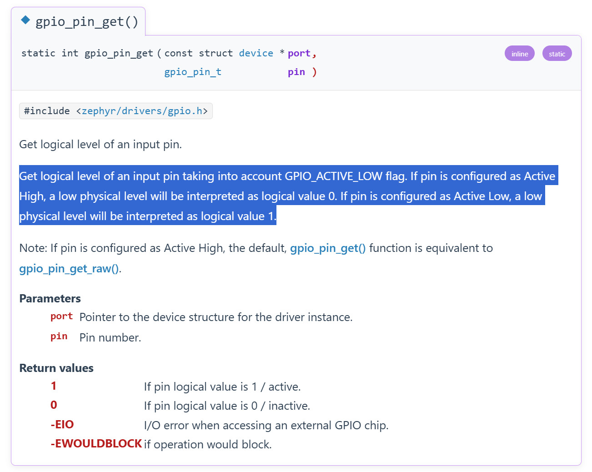
รูป: คำสั่ง gpio_pin_get()
▷ การทดลองกับบอร์ด ESP32-C3#
ตัวอย่างนี้ใช้โค้ดจากตัวอย่างที่แล้ว แต่จะเปลี่ยนมาลองใช้บอร์ดไมโครคอนโทรลเลอร์ที่มีชิป ESP32C3 และเลือกใช้บอร์ดที่สื่อสารกับคอมพิวเตอร์ผ่าน USB โดยตรง (ไม่มีชิปหรือวงจรภายนอกสำหรับ USB-to-Serial Bridge) เช่น
ดังนั้นจึงต้องมีการสร้าง Build ใหม่ และแก้ไขไฟล์ app.overlay สำหรับขา GPIO ให้ตรงกับบอร์ดที่ใช้งาน
ในตัวอย่างนี้ได้มีการต่อวงจรปุ่มกดภายนอก (Active-low) สำหรับขา GPIO-2
และใช้วงจร LED บนบอร์ด ซึ่งตรงกับขา GPIO-8
File: app.overlay
/ {
aliases {
led0 = &led0;
sw0 = &button0;
sw1 = &button1;
};
buttons {
compatible = "gpio-keys";
button0: button_0 {
gpios = <&gpio0 9 GPIO_ACTIVE_LOW>;
label = "BOOT button";
};
button1: button_1 {
gpios = <&gpio0 2 GPIO_ACTIVE_LOW>;
label = "User button";
};
};
leds {
compatible = "gpio-leds";
led0: led_0 {
gpios = <&gpio0 8 GPIO_ACTIVE_LOW>;
label = "LED 0";
};
};
};
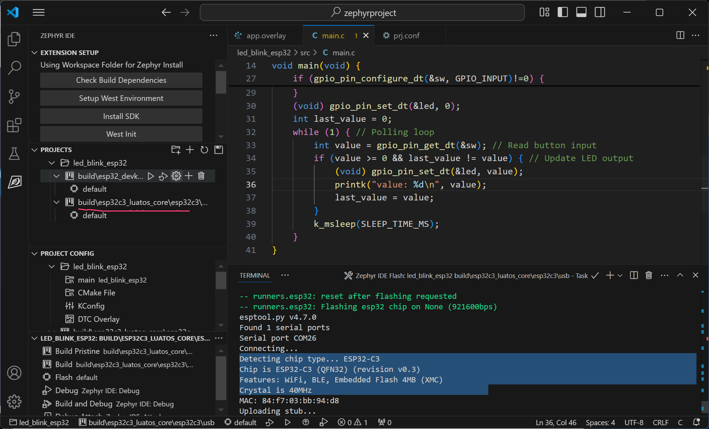
รูป: การทำขั้นตอน Build สำหรับ ESP32C3
▷ กล่าวสรุป#
บทความนี้ได้นำเสนอขั้นตอนการสร้างโปรเจกต์ใหม่ใน VS Code IDE + Zephyr IDE Extension (ทดลองกับระบบปฏิบัติการ Windows 11) ได้ทดลองเขียนโค้ดร่วมกับ Zephyr RTOS ในเบื้องต้น และมีตัวอย่างโค้ดที่สามารถนำไปทดลองใช้กับบอร์ด ESP32 และ ESP32C3 ได้จริง
This work is licensed under a Creative Commons Attribution-ShareAlike 4.0 International License.
Created: 2024-12-14 | Last Updated: 2024-12-15